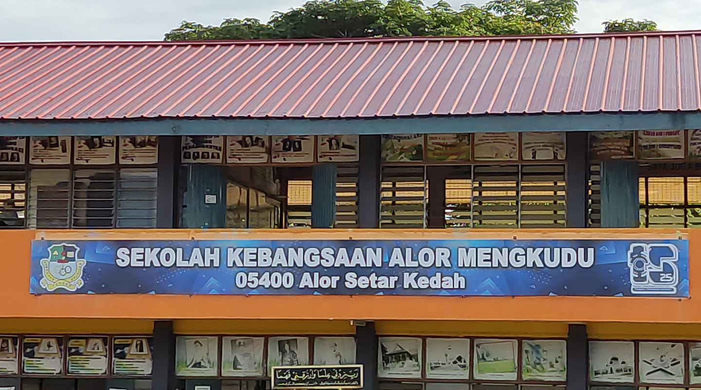

My journey in pursuing studies began in 2010, when I started my early studies at the age of 6 at a pre-school located inside Sekolah Kebangsaan Alor Mengkudu.
The picture on the left is the logo of the primary school. It was here that I began my journey of learning and growing. It was here that I learned what a friend is, what knowledge is, how to get along with others, and how to be independent.

I've been a bit of a shy student here, and I've always been more of a listener than a talker. In lower school, I didn't have many friends I clicked with, and I often felt a bit lonely. But I was lucky enough to keep that friendship going until now. I didn't lose all of them, I still have some friends from back then.
In 2016, it was my last year at this school after seven wonderful years of studying here. Back then, UPSR, or the Ujian Pentaksiran Sekolah Rendah, was still around, and I was lucky enough to take the examination calmly and easily. I'm so grateful that I got the result I wanted!